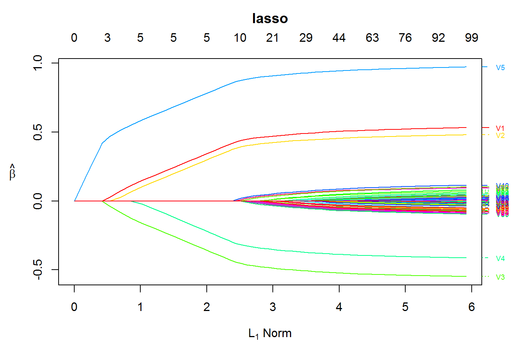
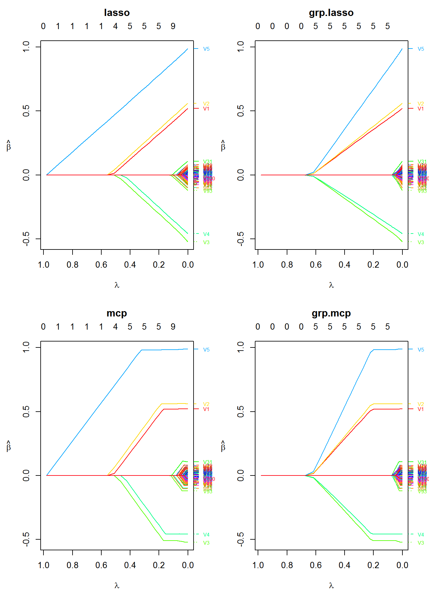
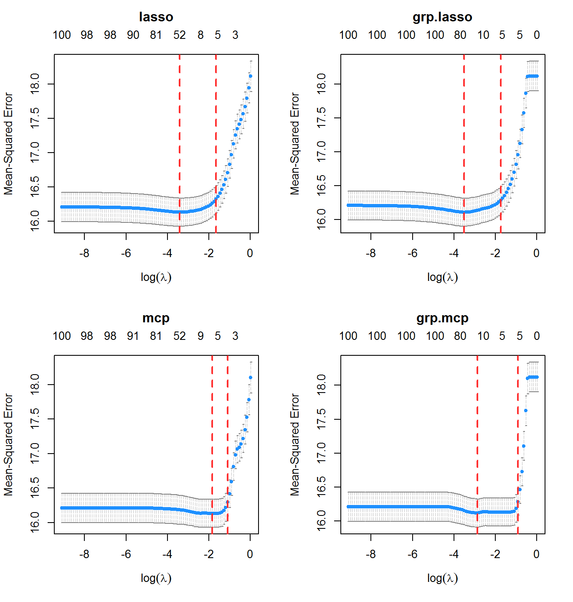
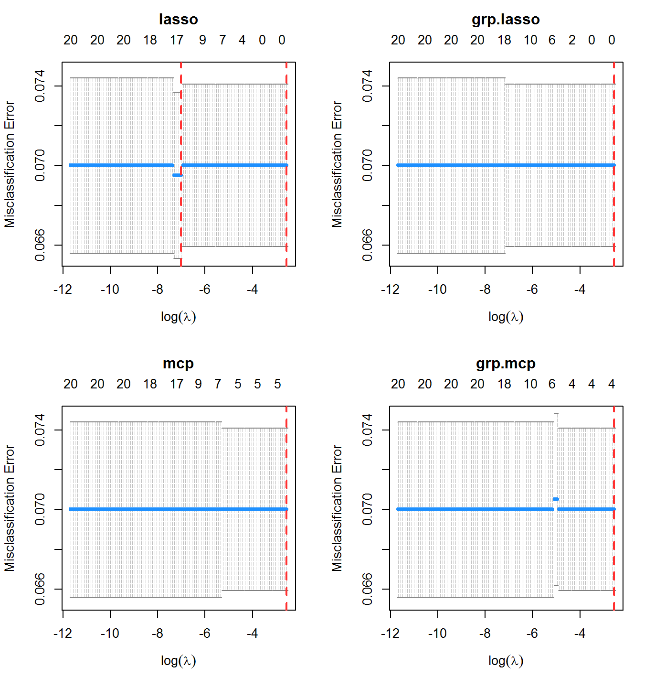
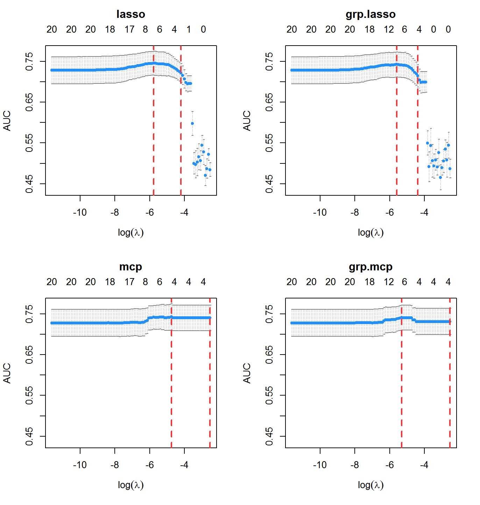
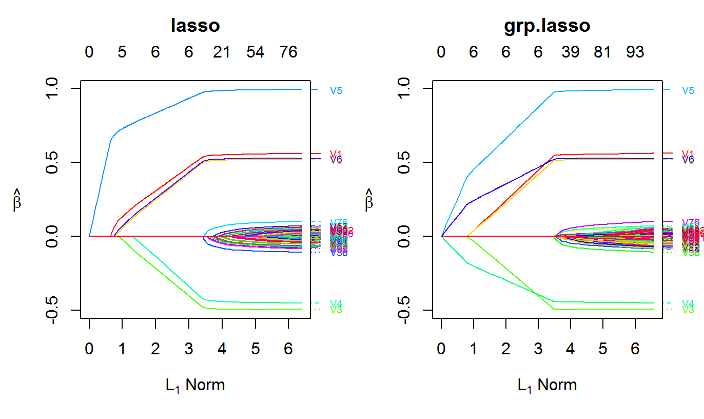

oem is a package for the estimation of various penalized regression models using the oem algorithm of (Xiong et al. 2016). The focus of oem is to provide high performance computation for big tall data. Many applications not only have a large number of variables, but a vast number of observations; oem is designed to perform well in these settings.
The simplest way to install oem is via the CRAN repositories as the following:
To install the development version, first install the devtools package
and then installl oem via the install_github function
First load oem
Simulate data
nobs <- 1e4
nvars <- 100
x <- matrix(rnorm(nobs * nvars), ncol = nvars)
y <- drop(x %*% c(0.5, 0.5, -0.5, -0.5, 1, rep(0, nvars - 5))) + rnorm(nobs, sd = 4)Fit a penalized regression model using the oem function
Plot the solution path

| Function Name | Functionality |
|---|---|
oem() |
Main fitting function |
predict.oemfit() |
Prediction for oem objects |
plot.oemfit() |
Plotting for oem objects |
logLik.oemfit() |
log Likelihood for oem objects |
cv.oem() |
Cross-validation function |
predict.cv.oem() |
Prediction for cv.oem objects |
plot.cv.oem() |
Plotting for cv.oem objects |
logLik.cv.oem() |
log Likelihood for cv.oem objects |
| Penalty | Option Name | Penalty Form |
|---|---|---|
| Lasso | lasso |
\(\lambda \sum_{j = 1}^pd_j|\beta_j|\) |
| Elastic Net | elastic.net |
\(\lambda \sum_{j = 1}^p\alpha d_j|\beta_j| + \frac{1}{2}(1 - \alpha)\lambda \sum_{j = 1}^pd_j\beta_j^2\) |
| MCP | mcp |
\(\lambda \sum_{j = 1}^pd_j \int_0^{\beta_j}(1 - x/(\gamma\lambda d_j))_+\mathrm{d}x\) |
| SCAD | scad |
\(\sum_{j = 1}^p p^{SCAD}_{\lambda d_j,\gamma}(\beta_j)\) |
| Group Lasso | grp.lasso |
\(\lambda \sum_{k = 1}^Gd_k\sqrt{\sum_{j \in g_k}\beta_j^2}\) |
| Group MCP | grp.mcp |
\(\lambda \sum_{k = 1}^Gp^{MCP}_{\lambda d_k,\gamma}(||\boldsymbol\beta_{g_k}||_2)\) |
| Group SCAD | grp.scad |
\(\lambda \sum_{k = 1}^Gp^{SCAD}_{\lambda d_k,\gamma}(||\boldsymbol\beta_{g_k}||_2)\) |
| Sparse Group Lasso | sparse.grp.lasso |
\(\lambda \alpha\sum_{j = 1}^pd_j|\beta_j| + \lambda (1-\alpha)\sum_{k = 1}^Gd_k\sqrt{\sum_{j \in g_k}\beta_j^2}\) |
where \(||\boldsymbol\beta_{g_k}||_2 = \sqrt{\sum_{j \in g_k}\beta_j^2}\), \[ p_{\lambda, \gamma}^{SCAD}(\beta) = \left\{ \begin{array}{ll} \lambda|\beta| & |\beta| \leq \lambda ; \\ -\frac{|\beta|^2 - 2\gamma\lambda|\beta| + \lambda^2}{2(\gamma - 1)} & \lambda < |\beta| \leq \gamma\lambda ; \\ \frac{(\gamma + 1)\lambda^2}{2} & |\beta| > \gamma\lambda, \\ \end{array} \right. \]
and
\[ p_{\lambda, \gamma}^{MCP}(\beta) = \lambda \int_0^{\beta}(1 - x/(\gamma\lambda ))_+\mathrm{d}x = \\ \left\{ \begin{array}{ll} -\lambda (|\beta| - \frac{\beta^2} {2 \lambda\gamma}) & |\beta| \leq \gamma\lambda ; \\ \frac{ \lambda^2\gamma}{2} & |\beta| > \gamma\lambda. \\ \end{array} \right. \]
Any penalty with .net at the end of its name has a ridge term of \(\frac{1}{2}(1 - \alpha)\lambda \sum_{j = 1}^pd_j\beta_j^2\) added to it and the original penalty multiplied by \(\alpha\). For example, grp.mcp.net is the penalty
\[\lambda \sum_{k = 1}^G\alpha p^{MCP}_{\lambda d_k,\gamma}(||\boldsymbol\beta_{g_k}||_2) + \frac{1}{2}(1 - \alpha)\lambda \sum_{j = 1}^pd_j\beta_j^2. \]
The following models are available currently.
| Model | Option Name | Loss Form |
|---|---|---|
| Linear Regression | gaussian |
\(\frac{1}{2n}\sum_{i=1}^n(y_i - x_i^T\beta) ^ 2\) |
| Logistic Regression | binomial |
\(-\frac{1}{n}\sum_{i=1}^n\left[y_i x_i^T\beta - \log (1 + \exp\{ x_i^T\beta \} ) \right]\) |
There are plans to include support for multiple responses, binomial models (not just logistic regression), Cox’s proportional hazards model, and more if requested.
The oem algorithm is well-suited to quickly estimate a solution path for multiple penalties simultaneously if the number of variables is not too large. The oem algorithm is only efficient for multiple penalties for linear models.
For the group lasso penalty, the groups argument must be used. groups should be a vector which indicates the group number for each variable.
fit2 <- oem(x = x, y = y, penalty = c("lasso", "mcp", "grp.lasso", "grp.mcp"),
groups = rep(1:20, each = 5))Plot the solution paths for all models
layout(matrix(1:4, ncol = 2))
plot(fit2, which.model = 1, xvar = "lambda")
plot(fit2, which.model = 2, xvar = "lambda")
plot(fit2, which.model = 3, xvar = "lambda")
plot(fit2, which.model = "grp.mcp", xvar = "lambda")
The following is a demonstration of oem’s efficiency for computing solutions for tuning parameter paths for multiple penalties at once.
The efficiency oem for fitting multiple penalties at once only applies to linear models. However, for linear models it is quite efficient, even for a high number of tuning parameters for many different penalties.
nobs <- 1e5
nvars <- 100
x2 <- matrix(rnorm(nobs * nvars), ncol = nvars)
y2 <- drop(x2 %*% c(0.5, 0.5, -0.5, -0.5, 1, rep(0, nvars - 5))) + rnorm(nobs, sd = 4)
system.time(fit2a <- oem(x = x2, y = y2, penalty = c("grp.lasso"),
groups = rep(1:20, each = 5), nlambda = 100L))## user system elapsed
## 0.21 0.02 0.21system.time(fit2b <- oem(x = x2, y = y2,
penalty = c("grp.lasso", "lasso", "mcp",
"scad", "elastic.net", "grp.mcp",
"grp.scad", "sparse.grp.lasso"),
groups = rep(1:20, each = 5), nlambda = 100L))## user system elapsed
## 0.23 0.03 0.27system.time(fit2c <- oem(x = x2, y = y2,
penalty = c("grp.lasso", "lasso", "mcp",
"scad", "elastic.net", "grp.mcp",
"grp.scad", "sparse.grp.lasso"),
groups = rep(1:20, each = 5), nlambda = 500L))## user system elapsed
## 0.33 0.03 0.36It is still more efficient to fit multiple penalties at once instead of individually for logistic regression, but the benefit is not as dramatic as for linear models.
nobs <- 5e4
nvars <- 100
x2 <- matrix(rnorm(nobs * nvars), ncol = nvars)
y2 <- rbinom(nobs, 1, prob = 1 / (1 + exp(-drop(x2 %*% c(0.15, 0.15, -0.15, -0.15, 0.25, rep(0, nvars - 5))))))
system.time(fit2a <- oem(x = x2, y = y2, penalty = c("grp.lasso"),
family = "binomial",
groups = rep(1:20, each = 5), nlambda = 100L))## user system elapsed
## 2.09 0.02 2.12system.time(fit2b <- oem(x = x2, y = y2, penalty = c("grp.lasso", "lasso", "mcp", "scad", "elastic.net"),
family = "binomial",
groups = rep(1:20, each = 5), nlambda = 100L))## user system elapsed
## 9.78 0.06 9.97Here we use the nfolds argument to specify the number of folds for \(k\)-fold cross validation
system.time(cvfit1 <- cv.oem(x = x, y = y,
penalty = c("lasso", "mcp",
"grp.lasso", "grp.mcp"),
gamma = 2,
groups = rep(1:20, each = 5),
nfolds = 10))## user system elapsed
## 1.41 0.05 1.46Plot the cross validation mean squared error results for each model
layout(matrix(1:4, ncol = 2))
plot(cvfit1, which.model = 1)
plot(cvfit1, which.model = 2)
plot(cvfit1, which.model = 3)
plot(cvfit1, which.model = 4)
The function xval.oem offers accelerated cross validation for penalized linear models. In many cases is is orders of magnitude faster than cv.oem. It is only recommended for scenarios where the number of observations is larger than the number of variables. In addition to the computational gains in single-core usage, it also benefits from parallelizaton using OpenMP (instead of using foreach, as used by cv.oem). For large enough problems, it has on a similar order of computation time as just fitting one OEM model.
nobsc <- 1e5
nvarsc <- 100
xc <- matrix(rnorm(nobsc * nvarsc), ncol = nvarsc)
yc <- drop(xc %*% c(0.5, 0.5, -0.5, -0.5, 1, rep(0, nvarsc - 5))) + rnorm(nobsc, sd = 4)
system.time(cvalfit1 <- cv.oem(x = xc, y = yc, penalty = "lasso",
groups = rep(1:20, each = 5),
nfolds = 10))## user system elapsed
## 5.26 0.74 6.00system.time(xvalfit1 <- xval.oem(x = xc, y = yc, penalty = "lasso",
groups = rep(1:20, each = 5),
nfolds = 10))## user system elapsed
## 0.81 0.04 0.92system.time(xvalfit2 <- xval.oem(x = xc, y = yc, penalty = "lasso",
groups = rep(1:20, each = 5),
nfolds = 10, ncores = 2))## user system elapsed
## 1.12 0.02 0.70## user system elapsed
## 0.18 0.05 0.22A variety of evaluation metrics can be used for cross validation. The available metrics can be found in the table below
| Model | Metric | type.measure= |
|---|---|---|
| Linear Regression | Mean squared error |
mse or deviance
|
| Mean absolute error | mae |
|
| ——————— | ———————————- | ———————— |
| Logistic Regression | Deviance | deviance |
| Area under the ROC curve | auc |
|
| Misclassification Rate | class |
|
| Mean squared error of fitted mean | mse |
|
| Mean absolute error of fitted mean | mae |
Consider a binary outcome setting with logistic regression.
nobs <- 2e3
nvars <- 20
x <- matrix(runif(nobs * nvars, max = 2), ncol = nvars)
y <- rbinom(nobs, 1, prob = 1 / (1 + exp(-drop(x %*% c(0.25, -1, -1, -0.5, -0.5, -0.25, rep(0, nvars - 6))))))cvfit2 <- cv.oem(x = x, y = y, penalty = c("lasso", "mcp",
"grp.lasso", "grp.mcp"),
family = "binomial",
type.measure = "class",
gamma = 2,
groups = rep(1:10, each = 2),
nfolds = 10, standardize = FALSE)
In this case, misclassification rate is not the best indicator of performance. The classes here are imbalanced:
## [1] 0.064Area under the ROC curve is an alternative classification metric to misclassification rate. It is available by setting type.measure = "auc".
cvfit2 <- cv.oem(x = x, y = y, penalty = c("lasso", "mcp",
"grp.lasso", "grp.mcp"),
family = "binomial",
type.measure = "auc",
gamma = 2,
groups = rep(1:10, each = 2),
nfolds = 10, standardize = FALSE)
With a very large dataset and computing cluster, the total size of a dataset may be very large, but if the number of variables is only moderately large (on the order of a few thousands) \(X^TX\) and \(X^TY\) may not be large and may already be available from other computations or can be computed trivially in parallel. The function oem.xtx computes penalized linear regression models using the OEM algorithm only using \(X^TX\) and \(X^TY\). Standardization can be achieved by providing a vector of scaling factors (usually the standard deviations of the columns of x). The function is used like the following:
xtx <- crossprod(xc) / nrow(xc)
xty <- crossprod(xc, yc) / nrow(xc)
system.time(fit <- oem(x = xc, y = yc,
penalty = c("lasso", "grp.lasso"),
standardize = FALSE, intercept = FALSE,
groups = rep(1:20, each = 5)))## user system elapsed
## 0.19 0.01 0.28system.time(fit.xtx <- oem.xtx(xtx = xtx, xty = xty,
penalty = c("lasso", "grp.lasso"),
groups = rep(1:20, each = 5)) ) ## user system elapsed
## 0.02 0.00 0.05## [1] 1.754152e-14## [1] 1.754152e-14The OEM package also provides functionality for on-disk computation with the big.oem function, allowing for fitting penalized regression models on datasets too large to fit in memory. The big.oem function uses the tools provided by the bigmemory package, so a big.matrix object must be used for the design matrix.
set.seed(123)
nrows <- 50000
ncols <- 100
bkFile <- "bigmat.bk"
descFile <- "bigmatk.desc"
bigmat <- filebacked.big.matrix(nrow=nrows, ncol=ncols, type="double",
backingfile=bkFile, backingpath=".",
descriptorfile=descFile,
dimnames=c(NULL,NULL))
# Each column value with be the column number multiplied by
# samples from a standard normal distribution.
set.seed(123)
for (i in 1:ncols) bigmat[,i] = rnorm(nrows)*i
yb <- rnorm(nrows) + bigmat[,1] - bigmat[,2]
## out-of-memory computation
fit <- big.oem(x = bigmat, y = yb,
penalty = c("lasso", "grp.lasso"),
groups = rep(1:20, each = 5))
## fitting with in-memory computation
fit2 <- oem(x = bigmat[,], y = yb,
penalty = c("lasso", "grp.lasso"),
groups = rep(1:20, each = 5))
max(abs(fit$beta[[1]] - fit2$beta[[1]])) ## [1] 1.534783e-05Computational time can be reduced a little via OpenMP parallelization of the key computational steps of the OEM algorithm. Simply use the ncores argument to access parallelization. There is no need for the foreach package.
nobsc <- 1e5
nvarsc <- 500
xc <- matrix(rnorm(nobsc * nvarsc), ncol = nvarsc)
yc <- drop(xc %*% c(0.5, 0.5, -0.5, -0.5, 1, rep(0, nvarsc - 5))) + rnorm(nobsc, sd = 4)
system.time(fit <- oem(x = xc, y = yc,
penalty = c("lasso", "grp.lasso"),
standardize = FALSE, intercept = FALSE,
groups = rep(1:20, each = 25)))## user system elapsed
## 3.58 0.09 3.80system.time(fitp <- oem(x = xc, y = yc,
penalty = c("lasso", "grp.lasso"),
standardize = FALSE, intercept = FALSE,
groups = rep(1:20, each = 25), ncores = 2))## user system elapsed
## 4.69 0.17 2.84If some variables should not be penalized, this can be specified through the use of the penalty.factor argument for all penalties other than the group lasso. For the group lasso, the group-specific weights can be modified by the group.weights argument. penalty.factor should be a vector of length equal to the number of columns in x. Each element in penalty.factor will be multiplied to the applied tuning parameter for each corresponding variable. For example, for a problem with 5 variables (ncol(x) = 5), setting penalty.factor = c(1, 1, 1, 0, 0) will effectively only allow penalization for the first three variables. The group.weights argument should be a vector with length equal to the number of groups. Similarly to penalty.factor, these weights will be multiplied to the penalty applied to each group. penalty.factor and group.weights can also be used to fit the adaptive lasso and adaptive group lasso, respectively.
The following example shows how to fit an adaptive lasso using oem
nobs <- 1e4
nvars <- 102
x <- matrix(rnorm(nobs * nvars), ncol = nvars)
y <- drop(x %*% c(0.5, 0.5, -0.5, -0.5, 1, 0.5, rep(0, nvars - 6))) + rnorm(nobs, sd = 4)
lams <- exp(seq(log(2.5), log(5e-5), length.out = 100L))
ols.estimates <- coef(lm.fit(y = y, x = cbind(1, x)))[-1]
fit.adaptive <- oem(x = x, y = y, penalty = c("lasso"),
penalty.factor = 1 / abs(ols.estimates),
lambda = lams)
group.indicators <- rep(1:34, each = 3)
## norms of OLS estimates for each group
group.norms <- sapply(1:34, function(idx) sqrt(sum((ols.estimates[group.indicators == idx]) ^ 2)))
fit.adaptive.grp <- oem(x = x, y = y, penalty = c("grp.lasso"),
group.weights = 1 / group.norms,
groups = group.indicators,
lambda = lams)
For further information about oem, please visit: